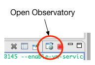
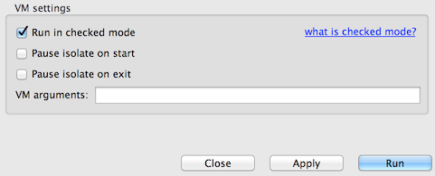
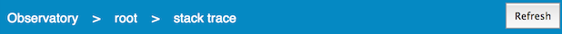
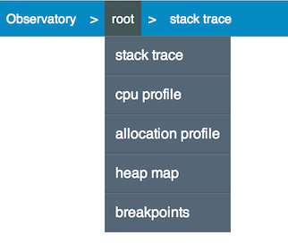
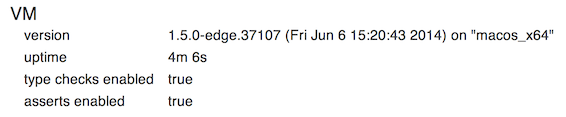
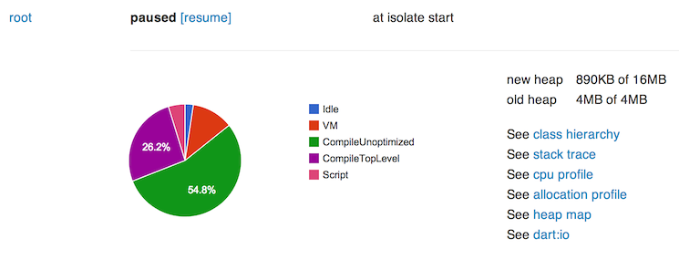

To get Observatory, just download the Dart SDK or Dart Editor. Both of those downloads include the Observatory tool.
You can use Dart to create two kinds of applications: standalone applications (including servers), and web applications (which run in a browser). For standalone apps, Observatory can be enabled either at the command line or from Dart Editor. For browser-based apps, Observatory can be opened in any browser using information obtained when launching your app in Dartium from the command line. So you can use Observatory to profile and debug any Dart application.
How you enable Observatory depends on whether you are writing a standalone app or a web app, and how you prefer to work. No matter how you launch Observatory, its UI is exactly the same.
You can open Observatory once you launch your app.
When you launch a standalone app in Dart Editor, it opens a console window to display the output. An “Open Observatory” icon is available in the tool bar for the console window:

Clicking the icon opens a new tab in your default browser and displays Observatory’s VM screen.
To customize the launch configuration for your app, select Run > Manage Launches to bring up the Manage Launches dialog.

Check the Pause isolate on start box if you want the root isolate
to pause before executing—this is equivalent to specifying the
--pause-isolates-on-start flag and is useful if you want to connect
to Observatory before the isolate begins running.
Check the Pause isolate on exit box if you want the root isolate
to remain alive when execution has completed—this is
equivalent to specifying the --pause-isolates-on-exit flag and
is useful for an application that might otherwise finish executing
before you can connect it to Observatory.
By default, neither of these boxes are checked.
You can also enter any other flags into the VM arguments text field—see the dart reference page for a complete list.
The next time you launch the app, it uses the specified configuration.
To enable Observatory from the command line, specify one or more Observatory options when launching the dart VM. See the dart reference page for a complete list.
For example:
$ dart --enable-vm-service --pause-isolates-on-start <script>.dart
Open a browser to localhost:8181 to see the Observatory UI.
From the command-line, launch your app in Dartium. For example, the following command launches a local copy of the Sunflower demo:
Mac OS:
$ cd <path-to-demo>/sunflower/web $ <path-to-Dartium>/Chromium.app/Contents/MacOS/Chromium sunflower.html
Windows:
> cd <path-to-demo>\sunflower\web > <path-to-Dartium>\Chromium\Application\chromium.exe sunflower.html
Linux:
$ cd <path-to-demo>/sunflower/web $ <path-to-Dartium>/chromium-browser sunflower.html
The command-line output includes a line similar to the following:
Observatory listening on http://127.0.0.1:49621
Open this URL in any browser to bring up Observatory.
Observatory uses a browser-based UI—the UI is the same no matter how it is launched.
A solid blue bar appears at the top of most screens. The word Observatory is on the left and a Refresh button is on the right. You can resample the information in any screens, at any time, using the Refresh button. (Some screens in Observatory provide additional buttons next to the Refresh button.)

A breadcrumb trail, inside the blue bar, shows where you are in the Observatory UI. You can click items in the breadcrumb trail to navigate to other parts of the UI.
If you hover over the items in the breadcrumb bar, drop-down menus provide additional functionality for each screens. As shown in the following screenshot, hovering over root brings up a menu that includes stack trace, cpu profile, and heap map.

You can return to the VM screen at any time by clicking Observatory in the breadcrumb bar.
The next section describes the VM screen, Observatory’s landing page. For a comprehensive list of all screens, see Screens in Observatory.
When you first connect to Observatory, it opens the VM screen, which reflects information available at the moment the app was sampled. For example:

To update the information, click the Refresh button in the upper right corner.
The displayed information includes:
Below the VM information is a list of isolates. Every app has an initial isolate named root.

For each isolate, a pie chart shows the breakdown of the activities of the VM. For more information on the meaning of these activities, see User and VM Tags.
A list of links take you to various Observatory screens. For more information, see Screens in Observatory.
Clicking the isolate’s name (for example, “root”) brings up an isolate screen, with detailed information about that isolate. For more information, see Isolate.
Where you should go next depends on what questions you’d like to answer.